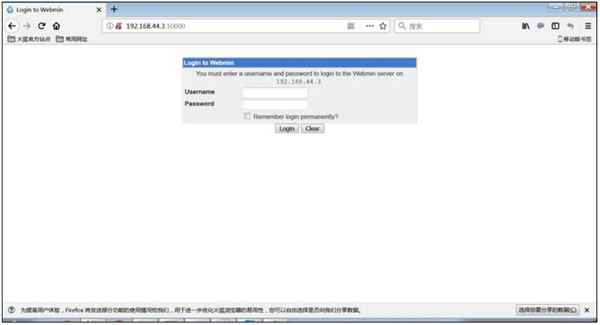

Linux脚本程序包及安装方法详解（以webmin为例）
目前常见的脚本程序以各类硬件的驱动居多，我们需要学习一下这类软件的安装方式，以备将来不时之需。
我们来看看脚本程序如何安装和使用。安装一个叫作 Webmin 的工具软件，Webmin 是一个基于 Web 的系统管理界面，借助任何支持表格和表单的浏览器（和 File Manager 模块所需要的Java），你就可以设置用户账号、apache、DNS、文件共享等。
Webmin 包括一个简单的 Web 服务器和许多 CGI 程序，这些程序可以直接修改系统文件，比如 /etc/inetd.conf 和 /etc/passwd。Web 服务器和所有的 CGI 程序都是用 Perl 5 编写的，没有使用任何非标准 Perl 模块。也就是说，Webmin 是一个用 Perl 语言写的、可以通过浏览器管理 Linux 的软件。
webmin安装步骤
首先下载 Webmin 软件，这里下载的是 webmin-1.610.tar.gz。接下来解压缩软件，命令如下：
[root@localhost ~]# tar -zxvf webmin-1.610.tar.gz
进入解压目录，命令如下：[root@localhost ~]# cd webmin-1.610
执行安装程序 setup.sh，并指定功能选项，命令如下：
[root@localhost webmin-1.610]# ./setup.sh
**************************
* Welcome to the Webmin setup script,version 1.610 *
**************************
Webmin is a web-based interface that allows Unix-like operating
systems and common Unix services to be easily administered.
Installing Webmin in /root/webmin-1.610...
**************************
Webmin uses separate directories for configuration files and log files.
Unless you want to run multiple versions of Webmin at the same time
you can just accept the defaults.
Config file directory [/etc/webmin]:
#选择安装位置，默认安装在/etc/webmin目录下。
如果安装到默认位置，则直接回车
Log file directory [/var/webmin]:
#日志文件保存位置，直接回车，选择默认位置
**************************
Webmin is written entirely in Perl.Please enter the full path to the
Perl 5 interpreter on your system.
Full path to peri (default /usr/bin/perl):
#指定Perl语言的安装位置，直接回车，选择默认位置，Perl默认就安装这里
Testing Perl...
Perl seems to be installed ok
**************************
Operating system name: CentOS Linux Operating system version: 6.3
**************************
Webmin uses its own password protected web server to provide access to the administration programs.
The setup script needs to know:
-What port to run the web server on.There must not be another web server already using this port.
-The login name required to access the web server.
-The password required to access the web server.
-If the Webserver should use SSL (if your system supports it).
-Whether to start webmin at boot time.
Web server port (default 10000):
#指定Webmin监听的端口，直接回车，默认选定 10000
Login name (default admin):admin #输入登录Webmin的用户名
Login password:
Password again:
#输入登陆密码
The Perl SSLeay library is not installed.SSL not available.
#apache默认没有启动SSl功能，所以SSl没有被激活
Start Webmin at boot time (y/n):y
#是否在开机的同时启动Webmin
…安装过程省略…
Webmin has been installed and started successfully.Use your web browser to go to
http://localhost:10000/
and login with the name and password you entered previously.
#安装完成

图 1 Webmin登录界面
当然，我们并不是要讲解 Webmin 管理界面如何使用，而是要讲解脚本程如何安装，所以工作已经完成。这种脚本安装简单快速，不过需要软件开商发布安装脚本。但是 Linux 中的绝大多数软件是没有这种脚本的。
关注微信公众号「站长严长生」，在手机上阅读所有教程，随时随地都能学习。本公众号由C语言中文网站长运营，每日更新，坚持原创，敢说真话，凡事有态度。

微信扫描二维码关注公众号